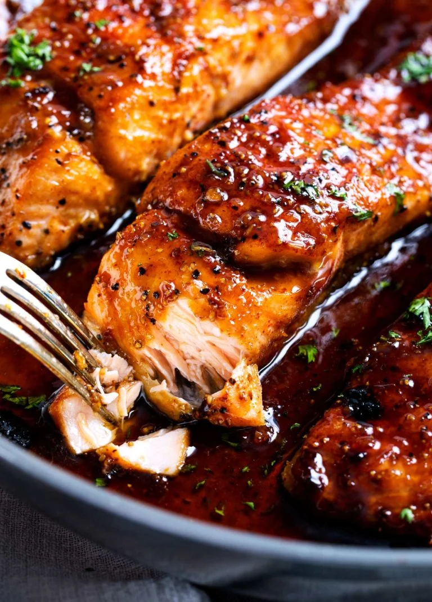

Honey Garlic Glazed Salmon

Savor Sweet and Savory Honey Garlic Glazed Salmon!
Let's make a honey garlic glazed salmon that’s perfectly caramelized and bursting with flavor. I’ll guide you through the process to achieve tender, flaky salmon with a sweet and savory glaze that’s sure to become a new favorite at your dinner table
Ingredients Needed (Servings 4)
For The Salmon:
- 4 (170 grams each) salmon fillets
- ½ teaspoon of kosher salt
- ½ teaspoon of black pepper
- ½ teaspoon of regular paprika
- ¼ teaspoon of seasoning (optional)
For The Sauce:
- 3 tablespoons of butter
- 2 teaspoons of olive oil
- 5 cloves of garlic minced
- 120ml of honey
- 3 tablespoons of water
- 3 tablespoons of soy sauce
- 1 tablespoon of sriracha sauce
- 2 tablespoons of lemon juice
Instructions
- Pat salmon dry, season with salt, pepper, paprika, and blackening seasoning (if using). Set aside.
- Important: Adjust oven rack to middle position, then preheat broiler. If the rack is too high, the sauce will burn.
- Add butter and oil to a large oven-safe skillet over medium-high heat. Once butter melts, add garlic, water, soy sauce, sriracha, honey, and lemon juice. Cook for 30 seconds until the sauce is heated through.
- Add salmon, skin-side down (if using skin-on salmon), and cook for 3 minutes. While cooking, frequently baste the salmon with sauce by spooning it over the top.
- Broil salmon for 5-6 minutes, basting once during broiling, until caramelized and cooked to desired doneness.
- Garnish with minced parsley, if desired.